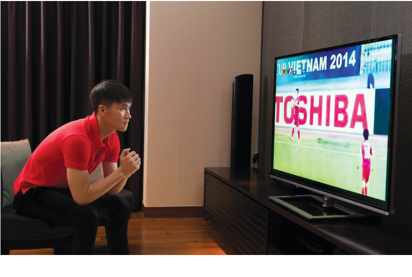

LÊ CÔNG VINH nói gì về giải Vô Địch Bóng Đá Nữ Châu Á 2014?
“Biết rằng đó có thể là một trận đấu rất quan trọng mở ra cơ hội lần đầu tiên lọt vào Vòng Chung Kết Bóng Đá Thế Giới trong lịch sử bóng đá Việt Nam, Vinh rất muốn đến sân cổ vũ cho các đồng đội nữ nhưng lại kẹt lịch đấu sau đó 02 ngày. Vinh đành phải xem qua TV”, Công Vinh chia sẻ về trận đấu giữa đội tuyển nữ Việt Nam và Thái Lan trong khuôn khổ Cúp Vô Địch Bóng Đá Châu Á AFC vừa diễn ra tối 21/5 vừa qua. Đêm mà người hâm mộ bóng đá Việt Nam đã tin rằng mình đang bước đến rất gần vòng chung kết bóng đá nữ thế giới.
Từ góc độ cá nhân, Công Vinh nhận xét các đồng đội nữ đã có một trận đấu rất hay và đầy kịch tính :” Dù chỉ được xem qua TV, nhưng Vinh có thể cảm nhận được sức nóng và tinh thần chiến đấu trên sân cỏ. Các cô gái của chúng ta đã không đầu hàng cho đến phút cuối cùng. Với bất kỳ ai xem trận đấu, đó là một trận cầu đỉnh cao và hấp dẫn đến tận phút cuối cùng dù kết quả có như thế nào.” Như bạn đã biết, tính cách của Vinh thường bình tĩnh, tự nhiên và anh chỉ nói với ý chí mạnh mẽ khi cần. Nhưng ngày hôm nay, khi được hỏi về trận đấu vừa qua, Vinh dường như có chút hứng khởi hơn bình thường giống như anh vừa xem xong trận đấu ngay tại sân vận động.
Về sự chuyên nghiệp !
Là một cầu thủ bóng đá đầy kinh nghiệm, Lê Công Vinh nói anh đã thấy được và rất nể tinh thần thi đấu vô cùng chuyên nghiệp của các đồng đội nữ. “khi tôi xem trận đấu, những gì tôi thấy được đó là sự chuyên nghiệp, điều đó không phải có được khi bạn ký vào một hợp đồng chuyên nghiệp mà là cách mà các cô gái Việt Nam đương đầu với khó khăn, với đối thủ trước những mong đợi của người hâm mộ và cả áp lực sân nhà đã làm cho Công Vinh suy nghĩ rất nhiều. Các đồng đội nữ gợi cho Vinh nhớ đến thời kỳ chơi bóng ở Sapporo, Nhật Bản. Dù có ai nói gì đi nữa, bạn cứ dũng cảm đương đầu, kiên trì đi tiếp và nỗ lực hết mình để có kết quả cao nhất…Đó chính là sự chuyên nghiệp để cống hiến hết mình cho khán giả và người hâm mộ, cũng là động lực phía sau bàn thắng đầu tiên của Công Vinh ở Nhật Bản” anh chia sẻ.
Một cách tự nhiên Vinh chia sẻ về thời gian anh chơi bóng ở Sapporo, một trải nghiệm làm giàu thêm vốn liếng nghề nghiệp của anh. “Người Nhật luôn cẩn thận, và chú trọng vào từng chi tiết trong tất cả mọi thứ họ làm như cách khởi động trận đấu, trang phục thế nào, ăn ruống ra sao. Những tính cách này ảnh hưởng rất lớn đến chất lượng thi đấu của mỗi trận.”
Hiểu được điều này, Vinh cũng khá khó tính và chi tiết trong đời sống hàng ngày. Một việc như chọn TV xem tại gia, anh chàng cầu thủ cũng nhất định yêu thích dòng TV LED Pro Theatre của Toshiba, đặc biệt sau khi anh phát hiện ra tính năng ưu việt “Foofball mode” sẽ bắt trọn màu sắc quả bóng lăn trên sân cỏ xanh và làm hình ảnh thêm sống động và chân thật đến từng chi tiết. Từng sống ở Nhật, Vinh nói anh ngưỡng mộ những sản phẩm Nhật Bản luôn được sản xuất với sự chăm chút và cầu toàn, thể hiện sự chuyên nghiệp và tận tâm của nhà sản xuất vì thế đối với Vinh “Toshiba càng đúng là một nhãn hàng tiêu biểu của Nhật Bản!”
Thật vậy, tất cả các TV LED trong dòng Pro Theatre của Toshiba đều được trang bị tính năng “Football Mode” giúp bắt trọn màu sắc của quả bóng trắng mà còn tái tạo hình ảnh sân cỏ xanh thêm mượt mà, giúp người xem được thưởng thức những trận đấu chân thật và hào hứng. Với bộ vi xử lý “CEVO Engine” hàng đầu, các sản phẩm của dòng TV LED Pro Theatre có được sự khác biệt vượt trội so với các sản phẩm khác trên thị trường. Bên cạnh tính năng “Football Mode”, tính năng “Intelligent Auto View” còn giúp cải thiện tối đa chất lượng hình ảnh, tự động điều chỉnh ánh sáng, nhiệt độ màu và đèn nền theo ánh sáng môi trường xung quanh, tạo nên những hình ảnh cực kỳ sắc nét và chuẩn mực.
Quay trở lại với chủ đề bóng đá, Công Vinh chia sẻ đã học được rất nhiều từ đội tuyển bóng đá nữ Việt Nam và tinh thần thi đấu kiên cường và chuyên nghiệp của họ “để có thể cố gắng hết mình cho giải vô địch AFF tại Việt Nam diễn ra vào cuối năm nay.”